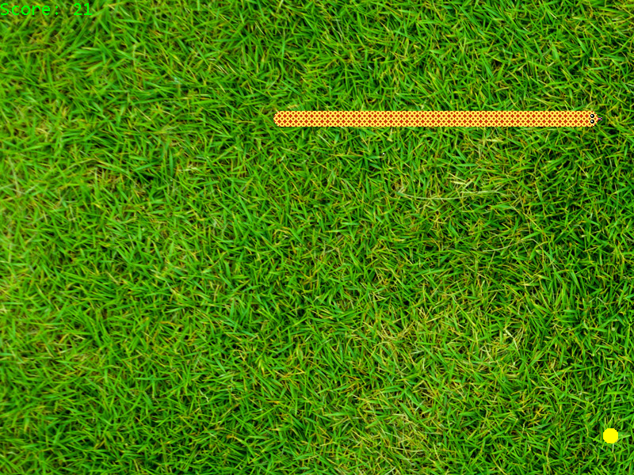
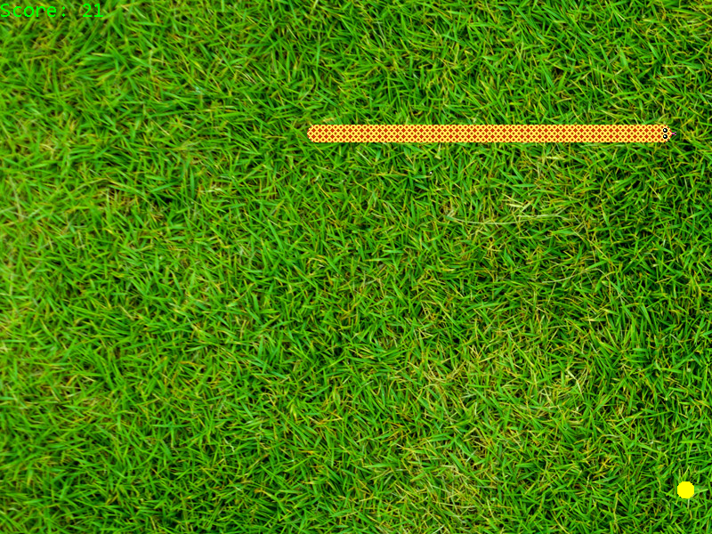

Blog of Ben Duffy
Graphics, Visualisation and Game Programming
Artificial Intelligence
Web Development
Gallery
What I did In:
December 2015
- Found out that Github hosted free static webpages and decided to create this one for a place to put my achievenments in one place.
It also encourages me to get more done because the whole world can now see I'm doing. Great place for me to practice my HTML, CSS and JavaScript.
I can also eventually use this web page for simple games and other visualisations.
November 2015
- Computer Vision assignment.
- A good amount of work for my 4th year thesis on Video Understanding. Started using Caffe deep learning library on Linux
- Read a lot about the theory of neural networks. Convolution, Recurrent Neural Nets, Backpropagation etc.
- Learned SQL for college.
- 10+ LearnOpenGL.com tutorials.
- College work.
- Began to learn how to use blender.
September-October 2015
- Computer Vision assignment.
Summer 2015
- Began working at Pointy (www.pointy.com) for 4 months.
- Front end: HTML, CSS, JavaScript, jQuery, Bootstrap, Jinja2, SVG, D3.js, Google Maps API, AJAX, Google Charts. Leaflet JS.
- Back end: Python, webapp2, Google app engine, bigTable.
- Other: JSON, XML, Git, RESTful interface,
Spring 2015
- TicTacToe AI engine. Picture soon.
- Remake of the PianoTile game. Picture soon.
- Got my 4th scholarship in my advanced level 2 grade exam in RIAM for classical guitar.
Winter 2014
- Dolpin Project. Picture soon.
- OpenGLES and Android.
- Spaceship game.


Summer 2014
- Began for the first time to work on side projects for programming. I started with game programming in C++ and DirectX.
I followed tutorials on YouTube by a game named Chili and I also read a book called 'Beginning Game Programming' by Jonathan Harbour.
Using the skills learned I remade 6 games over the summer.
- These were TicTacToe, Checkers, Minesweeper, Gomoku, Connect 4 and Snake. Pictures are below.


 
